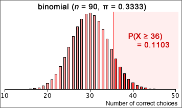

Rat recognition of symbols
In an experiment, a rat was trained to 'recognise' three symbols by placing food in one of three boxes (marked with a circle, cross and square) and shown a card with the correct symbol, this being repeated 100 times.
After this training period, 90 cards were presented to the rat and the box with the same symbol was picked 36 times.
H0: π = 1/3 (guessing)
HA: π > 1/3 (learned)
If the rat is guessing, the number of correct choices will be binomial with π = 1/3 and n = 90.

The p-value for the test is the probability of getting as 'extreme' a count as was observed if the rat guesses, 0.1103. Since this is high, we conclude that there is no evidence of learning from the data.
Interpretation of p-values
A p-value only tells you whether the data are consistent with the null hypothesis or are inconsistent with it. From a very small p-value, we can conclude that the null hypothesis is probably wrong. However a high p-value does not mean that the null hypothesis is correct, only that the observed data are consistent with it. In the rat training example, we could never be sure that π was not very very slightly different from 1/3.
A hypothesis test should never conclude that the null hypothesis is correct.
For the telepathy example, the correct interpretation of p-values would be...
| p-value | Conclusion |
|---|---|
| p > 0.1 | No evidence against π = 1/3. |
| 0.05 < p < 0.1 | Only slight evidence against π = 1/3. |
| 0.01 < p < 0.05 | Moderately strong evidence against π = 1/3. |
| p < 0.01 | Strong evidence against π = 1/3. |